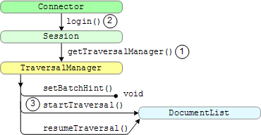

Google Search Appliance software version 6.2
Connector manager
version 2.4.0
Posted December 2009
Traversing means acquiring documents from a content management system that the connector manager feeds to a Google Search Appliance. Traversing is analogous to the search appliance concept of crawling.
Chapters: Home, About This Guide, Introduction, Getting Started, SPI Overview, Traversing Documents,
Authentication, Authorization, Configuration, Appendix A: Building a Debug Connector Manager
Traversing is acquiring documents from a content management system for the purpose of indexing the documents at a Google Search Appliance. For connector terminology definitions, see the Google Enterprise Glossary.
A connector that uses content feed acquires documents, metadata about each document, and URLs that point to the location of each acquired document in the content management system. A connector that uses metadata-and-URL feed acquires metadata for each document and a URL to the location of the document.
Traversing a content management system consists of the following tasks:
The following illustration shows the traversal interface:

The steps in the illustration are:
getTraversalManager method from the Session interface.Session interface is called from Connector interface's login method.startTraversal and resumeTraversal methods
return a DocumentList object. For
more information, see getTraversalManager Method. A connector controls traversal by setting the return value of the DocumentList interface:
null - Stop traversing, all documents are traversed. Wait 5 minutes before asking the content management system for updated documents.DocumentList containing zero documents - Set a progress checkpoint and resume traversing. DocumentList (non-empty) - Send documents in the DocumentList to the search appliance. For more information on DocumentList return values and document traversing exceptions, see Iterating Over a Document List.
This section explains how to code the following interfaces:
TraversalManager. Starts and resumes acquiring documents from a content management system. Also sets the number of documents in a batch that a connector requests from a content management system. DocumentList. Extracts a document from the list of documents. Also enables checkpointing the last traversed document. Document. Extracts property names from a document. Property. Extracts values from a property. Value. Provides a wrapper class for all data items from a content management system. The traversing section also provides related topics on metadata properties, logging, file access, persistent storage, and deleting documents from an index.
The first time the connector manager calls a connector instance, the connector manager calls the following methods:
Connector.login method of the connector instance to start a session. Session.getTraversalManager method to start the traversal manager. TraversalManager.setBatchHint method to inform
the connector that the number of documents to traverse need not be higher
than the number specified in the setBatchHint method.
Implementations must provide the setBatchHint method to
receive a preferred size for the number of documents in a batch to request
from a content management system. Connectors can ignore this call or acquire
approximately a recommended quantity of documents. TraversalManager.startTraversal method to iterate over
documents from the logical beginning of the content management system. Traversal
continues until the connector manager interrupts the connector instance to perform other tasks. After the connector manager is ready to resume acquiring documents, the connector manager calls the following methods:
DocumentList.checkpoint method to bookmark the location in
the content management system repository where traversal should resume. resumeTraversal method of the connector instance to resume traversing
at the document indicated by the checkpoint method.The following code example provides a sample TraversalManager implementation.
The code declares the class, specifies 500 documents for the fake content management system.
public class MockTraversalManager implements TraversalManager {
// The maximum number of documents in our fake repository.
private static final int MAX_DOCID = 500;
// The recommended number of documents to return in each batch.
private int batchHint;
// Set the recommended number of documents to return in next batch.
public void setBatchHint(int hint) throws RepositoryException {
if (hint > 0) {
this.batchHint = hint;
} else {
throw new RepositoryException("BatchHint must be a positive integer");
}
}
The next section lists the startTraversal method, which the connector
manager calls to start acquiring documents from the content management system.
// Start the traversal from the logical beginning of the repository.
public DocumentList startTraversal() throws RepositoryException {
// Start indexing at beginning of our fake repository.
return collectDocumentsFromId(0);
}
The next section lists the resumeTraversal method, which the connector manager
calls when it's ready to acquire more documents.
// Resume traversal from the saved checkpoint position in the repository.
public DocumentList resumeTraversal(String checkpoint) throws RepositoryException {
int checkpointId;
try {
// Extract the last docId returned from the checkpoint.
checkpointId = Integer.parseInt(checkpoint);
} catch (NumberFormatException e) {
throw new RepositoryException("Invalid checkpoint");
}
// Resume traversing at the next document after the last one returned.
return collectDocumentsFromId(checkpointId + 1);
}
After acquiring documents from the content management system, a connector iterates through the documents to process the documents. Thereafter, the connector manager passes the documents to the Google Search Appliance.
The DocumentList interface provides the checkpoint method that indicates the current position within the document list, that is where to start a resumeTraversal method. The nextDocument method gets the next document from the document list that the connector acquires from the content management system.
The return values for DocumentList are as follows.
| Return Value | Description |
|---|---|
null |
Informs the connector manager that there are no new documents in the content management system to traverse. The connector manager then waits 5 minutes before calling the resumeTraversal method to check the content management system for new documents to traverse. |
| Zero documents (empty) | Traversing is not done, set a checkpoint to indicate the current progress in the content management system, and immediately resume traversing.
This status enables a connector to handle very large processing tasks, such as finding just a few documents to which a user has access in a large database, or traversing a very large repository.
If a connector tries to execute long processing tasks, the connector manager timeout mechanism assumes that the connector is hung and attempts to restart the process. This can cause an infinite loop of failing to reach documents, timing out, restarting, and again failing. |
| Documents | Documents are ready for the connector manager to send to the search appliance. |
The checkpoint method should return information that allows the resumeTraversal method to resume on the document that was returned by nextDocument.
The connector manager may not acquire all documents from the content management system. The connector manager may interrupt the traversal of documents, call the checkpoint method, and start another task. When the connector manager is again ready to start traversing the content management system, the connector manager calls the resumeTraversal method and passes the checkpoint method to provide the current position.
Connectors can have these exceptions for documents:
RepositoryException. A transient error occurred while
traversing a document, such as a lost connection to the content management
system. The connector needs to reread the document. The connector manager
waits 15 minutes and retries the same batch before resuming traversal. RepositoryDocumentException. A document has an error and cannot be retrieved. Skip the document.OutofMemoryError. The connector is out of memory. The connector
manager waits 15 minutes and retries the same batch before resuming traversal. This
exception occurs for documents with a
length that exceeds the maxDocumentSize parameter specified in
connectorInstance.xml. By default, this parameter is set to 30 MB,
however you can set maxDocumentSize to any value up to 1 GB. If this
exception occurs frequently, raising the maxDocumentSize may require
adjusting the Java virtual machine (JVM) memory configuration options
-Xms and -Xmx, which are set during Apache Tomcat
startup. Tomcat deployments created by the Google Connector Installer (GCI)
configure the JVM -Xms and -Xmx settings in $CATALINA_BASE/bin/catalina.sh (or .bat),
rather than in the conventional location, $CATALINA_BASE/bin/setenv.sh (or .bat).The code that follows is a helper method that both startTraversal
and resumeTraversal call to build a list of documents. The batch hint
provides a useful end point in the for loop for adding documents to
the list. The value for baseDocId is passed from the caller.
// Build a DocumentList of no more than batchHint documents starting from baseDocId.
private DocumentList collectDocumentsFromId(int baseDocId) throws RepositoryException {
if (baseDocId > MAX_DOCID)
return null; // No more documents available.
MockDocumentList documentList = new MockDocumentList(batchHint);
for (int i = 0; i < batchHint; i++) {
int newDocId = baseDocId + i;
if (newDocId > MAX_DOCID)
break; // End of our fake repository.
documentList.add(new MockDocument(newDocId));
}
return documentList;
}
This section provides a DocumentList object.
// DocumentList returned from startTraversal() or resumeTraversal().
private class MockDocumentList extends ArrayList
implements DocumentList {
// The ID of the last document that was returned by nextDocument().
private int lastDocId = -1;
// The Iterator over the DocumentList.
private Iterator iterator = null;
public MockDocumentList(int size) {
super(size);
}
The next section gets the next document and stores the document ID to use as a checkpoint that the resumeTraversal method uses to get the next document to acquire from the
content management system.
// Return the next document in the DocumentList.
public Document nextDocument() throws RepositoryException {
if (iterator == null)
iterator = super.iterator();
if (iterator.hasNext()) {
MockDocument document = (MockDocument) iterator.next();
// Remember the id of the last document returned.
lastDocId = document.docId;
return document;
} else {
return null; // No more documents in list.
}
}
The next section provides the checkpoint value when called, or null to indicate to use the previous stored checkpoint.
// Return a checkpoint recording the last document returned
// from nextDocument().
public String checkpoint() throws RepositoryException {
if (lastDocId < 0)
return null; // No new checkpoint.
else
return String.valueOf(lastDocId);
}
}
The next section provides a Document object.
// Trivial Document with no content and only a DOCID Property.
private class MockDocument implements Document {
public int docId;
public MockDocument(int id) {
this.docId = id;
}
The connector manager uses the next section to find a property
or to get all the properties for a document. Note the use of the
String equalsIgnoreCase operator appended
to the property to ensure the case is ignored in the property.
public Property findProperty(String name)
throws RepositoryException {
if (SpiConstants.PROPNAME_DOCID.equalsIgnoreCase(name))
return new MockProperty(String.valueOf(docId));
else
return null;
}
public Set getPropertyNames() throws RepositoryException {
// We only provide the mandatory DOCID Property.
HashSet names = new HashSet();
names.add(SpiConstants.PROPNAME_DOCID);
return names;
}
}
The next section provides a Property object to return a string value.
// Trivial Property that returns a single string value.
private class MockProperty implements Property {
String value = null;
public MockProperty(String value) {
this.value = value;
}
The last section provides the nextValue method that packages a property value by type.
public Value nextValue() throws RepositoryException {
if (Value == null) {
return null;
} else {
// Use the Value class to package up the String.
Value returnValue = Value.getStringValue(value);
value = null;
return returnValue;
}
}
}
}
The connector manager provides the TraversalManager.setBatchHint
method so that the connector manager can indicate to the connector to acquire only as many documents
in the DocumentList as are specified in the hint value. This is a hint and the connector
need not observe the number of results. For example, the traversal may be completely up to date, so
perhaps there are no results to return.
The connector manager always calls setBatchHint before calling startTraversal
or resumeTraversal. The setBatchHint is determined by the traversal rate. The
first call to a traversal method in a particular minute has a batch hint matching the traversal rate.
Subsequent calls in the same minute will have a batch hint of the traversal rate minus the number of
documents traversed so far during that minute. If the batch hint becomes zero, the traversal method
will not be called until the minute has elapsed.
Traversal methods should always pay attention to the batch hint, because this value specifies how
many documents the connector manager processes in a DocumentList.
In the following example, the connector manager passes the batch hint value and the setBatchHint method assigns the value.
private int batchHint = -1;
...
public void setBatchHint(int batchHint) throws RepositoryException {
this.batchHint = batchHint;
}
The following example limits the batch hint to 100,000 documents. This example connector later references the batchSize parameter in a call to a database for storing values.
public void setBatchHint(int hint) {
if (hint < 0)
throw new RepositoryException();
else if (hint == 0)
batchSize = 100;
else if (hint > 100000)
batchSize = 100000;
else
batchSize = hint;
}
Checkpointing consists of recording how far a traversal has progressed through the
documents in the content management system. The connector manager calls the resumeTraversal method to pass the saved checkpoint to the connector. The DocumentList.checkpoint method lets a connector
indicate the next document to traverse.
A connector can also store the state of the traversal on its own and assume that the
resumeTraversal method knows where to look for this state information. If a
connector maintains its own state, the connector must wait until the connector manager
calls the checkpoint method before committing changes to the state. The
connector can't assume that a document returned from nextDocument has been
successfully processed.
Return values for the checkpoint method:
| Return Value | Description |
|---|---|
null |
Indicates that there is no new checkpoint |
| Next document ID | Indicates the next document to traverse.
The connector manager saves the string returned by the |
Non-null |
Indicates that the connector cannot return a checkpoint string.
If a connector decides that it cannot return a checkpoint string, the connector must
return a non- |
For more information on the checkpoint method, see getTraversalManager Method.
Returning a checkpoint string may be impractical for performance, such as when taking too much work to get the state of a traversal into a string and then parsing out the string.
For information on writing information, see File Access and Scheduling and Checkpoint Data Files.
The following code example iterates over a list of documents and returns a checkpoint. In
the last section of this code block, the code maintains the last document ID (lastDocId)
in NextDocument and incrementing as it goes. When the checkpoint method is
called, it knows how far it has gotten through the document list.
// Return the next document in the DocumentList.
public Document nextDocument() throws RepositoryException {
if (iterator == null)
iterator = super.iterator();
if (iterator.hasNext()) {
MockDocument document = (MockDocument) iterator.next();
// Remember the id of the last document returned.
lastDocId = document.docId;
return document;
} else {
return null; // No more documents in list.
}
}
// Return a checkpoint recording the last document returned from nextDocument().
public String checkpoint() throws RepositoryException {
if (lastDocId < 0)
return null; // No new checkpoint.
else
return String.valueOf(lastDocId);
}
}
If a connector needs to record the traversal state, it must only do so in the checkpoint method, and not in the nextDocument method. The recorded state must be retrieved in resumeTraversal, for example:
// Resume traversal from the saved checkpoint position in the repository.
public DocumentList resumeTraversal(String dummy) throws RepositoryException {
int checkpointId;
try {
// Read the checkpoint from disk.
BufferedReader in = new BufferedReader(new FileReader("checkpoint.txt"));
try {
String checkpoint = in.readLine();
// Extract the last docId returned from the checkpoint.
checkpointId = Integer.parseInt(checkpoint);
} finally {
in.close();
}
} catch (IOException e) {
throw new RepositoryException(e);
} catch (NumberFormatException e) {
throw new RepositoryException("Invalid checkpoint");
}
// Resume traversing at the next document after the last one returned.
return collectDocumentsFromId(checkpointId + 1);
}
...
// Return a checkpoint recording the last document returned
// from nextDocument().
public String checkpoint() throws RepositoryException {
if (lastDocId < 0)
return null; // No new checkpoint.
else {
try {
// Save the checkpoint to disk.
FileWriter out = new FileWriter("checkpoint.txt");
try {
out.write(String.valueOf(lastDocId));
} finally {
out.close();
}
} catch (IOException e) {
throw new RepositoryException(e);
}
return ""; // Any non-null string is OK.
}
}
}
For information on writing information to disk, see File Access.
The connector manager provides the TraversalContext class implementation
so that a connector can determine document types
to provide during a traversal. Connectors may use
the information provided by the TraversalContext class to limit content
provided for indexing, based upon document size or MIME type.
The Spring Framework constructs the TraversalContext using a bean definition
in the applicationContext.xml file. The bean definition also allows an administer
to modify the TraversalContext constraints to suit their needs. The maximum document
size, unknown MIME type support level, and the sets of MIME types to prefer, support, or not support
can all be configured.
Note: A MIME type consists of two parts, a major class and a minor
class, for example, application/text. If a major and minor MIME type is not explicitly
defined in the applicationContext.xml file and a MIME type cannot be resolved, then the
rule applies to the all uses of the major MIME type class. For example, if you have a corporate MIME
type such as application/treefrog and this MIME type is not defined in the XML file, the
connector manager applies the rules in the applicationContext.xml file to all MIME types
with the application major class.
Note: The default settings for the supported MIME types are comprehensive
so that a connector can continue to feed useful data and exclude only content that would be excluded normally
by the default configuration of the Google Search Appliance--after enabling traversal context awareness,
administrators need not change the applicationContext.xml unless a change is made applications
to not crawl in the Admin Console.
This section provides the following topics
If a connector's TraversalManager implementation adds the
com.google.enterprise.connector.spi.TraversalContextAware interface,
the connector manager can call the setTraversalContext
method, and supply context values for the connector to use
before the connector manager calls the methods in the TraversalManager interface.
A connector needs to import access to the TraversalContext and TraversalContextAware packages.
The following example demonstrates this calling sequence:
import com.google.enterprise.connector.spi.TraversalContext;
import com.google.enterprise.connector.spi.TraversalContextAware;
class MyTraversalManager
implements TraversalManager, TraversalContextAware {
/** The TraversalContext from TraversalContextAware Interface */
private TraversalContext traversalContext = null;
public void setTraversalContext(TraversalContext traversalContext) {
this.traversalContext = traversalContext;
}
...
}
If a connector contains an instance of the TraversalContext class,
the connector's TraversalManager
class can then use the context to tailor its document feed.
The mimeTypeSupportLevel method determines whether to send a document's content to the search appliance. The preferredMimeType method returns the most preferred (highest support level) MIME type from the supplied set.
For example, in
the following code snippet, the TraversalContext class determines
whether or not to supply a google:content property for a document.
private void addContentProperty() throws RepositoryException {
File contentFile;
String mimeType;
...
long fileSize = contentFile.length();
// Empty/NonExistent file has no content.
if (fileSize <= 0L)
return;
// The TraversalContext interface provides additional
// screening depending on content size and MIME type.
if (traversalContext != null) {
// Is the content too large?
if (fileSize > traversalContext.maxDocumentSize())
return;
// Is this MIME type supported?
if (traversalContext.mimeTypeSupportLevel(mimeType) <= 0)
return;
}
// If okay, create a content stream property
// and add it to the property map.
InputStream contentStream = new FileInputStream(contentFile);
Value contentValue = Value.getBinaryValue(contentStream);
props.addProperty(SpiConstants.PROPNAME_CONTENT, contentValue);
return;
}
The TraversalContext interface provides the following methods:
maxDocumentSize. Sets the maximum file size in bytes that that the connector can traverse. This value must be less than or equal to 30 MB (31457280 bytes), which is the maximum file size for indexing on the Google Search Appliance. mimeTypeSupportLevel. Determines if a MIME type is supported in the applicationContext.xml file. preferredMimeType. Returns the preferred MIME type for a set of MIME types. The methods are as follows.
public interface TraversalContext {
/**
* Gets a size limit for contents passed through the connector
* framework. If a developer has a way of asking the repository
* for the size of a content file before fetching it, then a
* comparison with this size would save the developer the cost
* of fetching a content that is too big to be used.
*
* @return The size limit in bytes
*/
long maxDocumentSize();
/**
* Gets information about whether a MIME type is supported.
* Non-positive numbers mean that there is no support for this
* MIME type. Positive values indicate possible support for this
* MIME type, with larger values indicating better support or
* preference.
*
* @return The support level - non-positive means no support
*/
int mimeTypeSupportLevel(String mimeType);
/**
* Returns the most preferred MIME type from the supplied set.
* This returns the MIME type from the set with the highest support
* level. MIME types with "/vnd.*" subtypes are preferred over
* others, and MIME types registered with IANA are preferred over
* those with "/x-*" experimental subtypes.
*
* If a repository contains multiple renditions of a particular
* item, it may use this to select the best rendition to supply
* for indexing.
*
* The support level values for MIME types are defined in the
* MimeTypeMap bean definition in applicationContext.xml.
*
* @param mimeTypes a set of MIME types.
* @returns the most preferred MIME type from the Set.
*/
String preferredMimeType(Set mimeTypes);
}
The default values for the TraversalContext settings reflect
either common usage or Google Search Appliance limitations.
However, a knowledgeable user or administrator can tailor some
of the search appliance and TraversalContext configuration to better suit
their enterprise content.
For example, the Google Search Appliance doesn't index a
document whose content exceeds 30 megabytes in size and the
default TraversalContext.maxDocumentSize value reflects
that limit. However, perhaps you wish to impose a lower
limit, only indexing documents that are 5 megabytes or less.
Or perhaps you prefer to index Postscript or PDF pre-press
versions of documents, rather than the original Office suite
formats.
You may tune TraversalContext settings by editing one or
more of the connector Manager web application configuration
files. In some cases it may also be necessary to modify
the Search Appliance configuration (using the search appliance Administration
pages).
The maximum document size limit may be configured by adjusting
the maxDocumentSize property of the FileSizeLimitInfo bean
definition in applicationContext.xml. Do not set maxDocumentSize
larger than the 30 MB search appliance document limit.
If the document size exceeds the maxDocumentSize value or if the content
is an unsupported MIME type, the connector should not feed the document content.
The search appliance indexes all metadata about a document, but not the document's content.
The use of the maxDocumentSize parameter avoids the occurrence of throwing
the OutOfMemoryErrors exception--if the maxDocumentSize parameter
is set, then MIME types with large content size can be excluded from being fed to the
Google Search Appliance. For more information on exceptions, see Iterating Over a Document List.
The support level values for MIME types that are used by the
mimeTypeSupportLevel and preferredMimeType methods are defined
in the MimeTypeMap bean definition in the applicationContext.xml file.
Support levels are integer values, with higher positive
integers have a higher preference than lower values. Support
levels less than or equal to zero indicate that MIME type
is not supported. The default value is 1, which indicates that a document type is unknown. The
value 1 sends unidentifiable content to the Google Search Appliance, 0 does not send
unidentifiable content to the search appliance.
The TraversalContext.maxDocumentSize(String mimeType) method
returns the support level of the specified MIME type. MIME type
support levels are used to rank items supplied to
TraversalContext.preferredMimeType(Set mimeTypes).
The MimeTypeMap bean definition in applicationContext.xml groups MIME types into four categories:
The entries or each of the preferred, supported and unsupported sets are a list of content types that may or may not include subtypes. Exact (case-insensitive) matches are attempted first. If an exact match is not found, a match is attempted using the base type without the subtype.
For example:
preferredMimeTypes={} (empty), supportedMimeTypes={"foo/bar"},
unsupportedMimeTypes={"foo", "cat"}
Foo/Bar matches (case-insensitively) foo/bar, so it would be considered supported.
Foo/baz does not have an exact match, but its content type, without a subtype, foo,
does have a match in the unsupported table,
so it should be considered unsupported. Similarly, cat/persian would be considered unsupported. Xyzzy/bar lacks an exact
match, and its content type without a subtype, xyzzy, is also not
present, so it would be assigned the unknownMimeTypeSupportLevel.
Nearly all of the IANA recognized content type classes are well represented in the preferred, supported, unsupported MIME types sets, so very few MIME types should end up as unknown. Removing a content type without a subtype entries from the preferred, supported, unsupported MIME types sets forces more MIME types to become unknown. For more information, see MIME Media Types at IANA.org.
Moving MIME types between preferred, supported, and unsupported adjusts the support level for that MIME type. Move MIME types you explicitly don't want to index to the unsupported set. Moving the MIME type (without a subtype) entries, like application, can have sweeping effects.
You could add MIME types for new, experimental, or custom content.
Deleting entries with explicit subtypes forces an attempt
to match an entry sans subtype. For example, deleting the
application/postscript entry from the supported set would
cause the support level for such content to drop to the
application support level, currently unsupported.
Deleting an entry without a subtype forces all subtypes
not explicitly listed to be considered unknown. For example,
the application content type class is currently listed in
the unsupported set. As such, the MIME type
application/vnd.informix-visionary, not explicitly mentioned
elsewhere, would have the support level of unsupported.
Deleting the application entry from the unsupported set
forces application/vnd.informix-visionary, lacking both
an explicit entry and an application entry without a subtype,
to be assigned the unknownMimeType support level.
The Admin Console provides the capability to reset a connector. The connector manager uses its restartConnectorTraversal servlet. At the connector level, the connector manager performs the following actions:
startTraversal to force a new traversal of the content management system from the beginningA connector requests documents, metadata for a document and a URL for a document's location from the API for the content management system. A connector provides the search appliance with a URL for each document and metadata that describes document attributes, such as a document ID value, a MIME type, whether documents are publicly available or controlled-access, and an optional last modified date. The connector may also provide metadata specific to a content management system.
The last-modified date ordering is useful for a search appliance to acquire the latest documents for indexing. You need to create connector software that maps the metadata from the content management system into the properties of the service provider interface (SPI) of the connector manager. For information on the SPI, see the SpiConstants section in the Javadoc.
The connector manager uses the Document.findProperty method to find a property
by name in a document or the Document.getPropertyNames method to get all the properties for a document.
Important: If the connector manager requests a property from the
connector that a document does not contain, the connector must return null and not throw an exception.
Content management systems use their own names for each metadata property.
A connector needs to map those names to the property names in the SpiConstants class.
The connector manager requires the use of the PROPNAME_DOCID property
and recommends the use of the PROPNAME_LASTMODIFIED property.
Google Enterprise strongly suggests that you specify a MIME type in the PROPNAME_MIMETYPE property.
Properties With Multiple Values
Even though some content management systems allow properties with multiple values,
they typically represent a small set of the metadata associated with documents.
Because properties with multiple values can exist, the Property interface
was designed to allow them. However, some properties are expected to have only one value
and PROPNAME_DOCID is one of them. A document must have a single, unique document ID value.
The following example shows how to return a property with multiple values:
public Value nextValue() throws RepositoryException {
if (iterator != null) {
// Return the values of a Property with multiple values.
if (iterator.hasNext()) {
return fromObject(iterator.next());
}
return null;
} else {
// Return the value of a Property with a single value, but only once;
Value returnValue = singleValue;
singleValue = null;
return returnValue;
}
}
Property Names Outside SpiConstants
You can create property names outside of the SpiConstants class
if required to indicate the metadata from an underlying content management system.
These entries can be searchable and users can select the entries in advanced queries
with search keywords such as using the inmeta filter. For more information,
see "Using inmeta to Filter by Meta Tags" in the
Search Protocol Reference.
Property names like author, title, license, and tags are
examples of metadata that the connector manager does not explicitly look for, but which you can pass to the
search appliance for indexing.
Note: If a connector uses content feed, do not set the
PROPNAME_SEARCHURL property. If a connector uses metadata-and-URL feed, set the
PROPNAME_SEARCHURL property. For more information, see
Understanding Content Feed and Metadata-and-URL Feed.
The connector manager uses the Property.findProperty method to find a property in a document by name or the Property.getPropertyNames method to provide a list of all properties that a document contains. If the connector manager requests a property that a document does not contain, the connector returns null and must not throw an exception.
Two behaviors are required:
findProperty method returns null and does not throw an exception when an unknown property is requested.SimpleProperty instance cannot be returned each time.
This is because the nextValue method on the SimpleProperty
instance will return null the second time the property is retrieved.The following code example code provides an implementation of the Property interface that
is notable for its large number of overloaded constructors, its various primitive types, and its
common Object types. These constructors make an informed choice of which Value class
method to call based on the type of the parameter supplied to the constructor.
public class SmartProperty implements Property {
// Used by single-value properties.
Value singleValue = null;
// Used by multi-value properties.
Iterator iterator = null;
// Constructors for single-value Properties of primitive types.
public SmartProperty(int anInt) {
// Use the Value class to construct a long integer value.
singleValue = Value.getLongValue((long) anInt);
}
public SmartProperty(long aLong) {
// Use the Value class to construct a long integer value.
singleValue = Value.getLongValue(aLong);
}
public SmartProperty(boolean aBool) {
// Use the Value class to construct a boolean value.
singleValue = Value.getBooleanValue(aBool);
}
public SmartProperty(float aFloat) {
// Use the Value class to construct a floating point value.
singleValue = Value.getDoubleValue((double) aFloat);
}
public SmartProperty(double aDouble) {
// Use the Value class to construct a floating point value.
singleValue = Value.getDoubleValue(aDouble);
}
public SmartProperty(byte[] byteArray) {
// Use the Value class to construct a byteArray binary value.
singleValue = Value.getBinaryValue(byteArray);
}
// Constructors for single-value Properties of Java primitive wrapper Objects.
public SmartProperty(Integer anInt) {
// Use the Value class to construct a long integer value.
singleValue = Value.getLongValue(anInt.longValue());
}
public SmartProperty(Long aLong) {
// Use the Value class to construct a long integer value.
singleValue = Value.getLongValue(aLong.longValue());
}
public SmartProperty(Short aShort) {
// Use the Value class to construct a long integer value.
singleValue = Value.getLongValue(aShort.longValue());
}
public SmartProperty(Boolean aBool) {
// Use the Value class to construct a boolean value.
singleValue = Value.getBooleanValue(aBool.booleanValue());
}
public SmartProperty(Float aFloat) {
// Use the Value class to construct a floating point value.
singleValue = Value.getDoubleValue(aFloat.doubleValue());
}
public SmartProperty(Double aDouble) {
// Use the Value class to construct a floating point value.
singleValue = Value.getDoubleValue(aDouble.doubleValue());
}
public SmartProperty(String aString) {
// Use the Value class to construct a String value.
singleValue = Value.getStringValue(aString);
}
public SmartProperty(InputStream aStream) {
// Use the Value class to construct a binary InputStream value.
singleValue = Value.getBinaryValue(aStream);
}
public SmartProperty(Calendar aDate) {
// Use the Value class to construct a Date value.
singleValue = Value.getDateValue(aDate);
}
public SmartProperty(Date aDate) {
// Use the Value class to construct a Date value.
Calendar calendar = new GregorianCalendar();
calendar.setTime(aDate);
singleValue = Value.getDateValue(calendar);
}
// Constructors for multi-valued Properties.
public SmartProperty(Collection values) {
this.iterator = values.iterator();
}
public SmartProperty(Object[] objectArray) {
this.iterator = Arrays.asList(objectArray).iterator();
}
// Constructor for generic Objects.
// Try to upcast to the appropriate type.
public SmartProperty(Object anObject) {
singleValue = fromObject(anObject);
}
Helper method to get a value from an object.
private static Value fromObject(Object obj) {
if (obj == null)
return null;
if ((obj instanceof Integer) || (obj instanceof Long) || (obj instanceof Short))
return Value.getLongValue(((Number) obj).longValue());
else if ((obj instanceof Float) || (obj instanceof Double))
return Value.getDoubleValue(((Number) obj).doubleValue());
else if (obj instanceof Boolean)
return Value.getBooleanValue(((Boolean) obj).booleanValue());
else if (obj instanceof String)
return Value.getStringValue((String) obj);
else if (obj instanceof InputStream)
return Value.getBinaryValue((InputStream) obj);
else if (obj instanceof Calendar)
return Value.getDateValue((Calendar) obj);
else if (obj instanceof Date) {
Calendar calendar = new GregorianCalendar();
calendar.setTime((Date) obj);
return Value.getDateValue(calendar);
} else {
// Fall through to providing a String representation of non-primitive objects.
return Value.getStringValue(obj.toString());
}
}
Check to see if the property has multiple values or a single value and return the value.
public Value nextValue() throws RepositoryException {
if (iterator != null) {
// Return the values of a Property with multiple values.
if (iterator.hasNext()) {
return fromObject(iterator.next());
}
return null;
} else {
// Return the value of a Property with a single value, but only once;
Value returnValue = singleValue;
singleValue = null;
return returnValue;
}
}
}The SpiConstants class is a non-instantiable class that holds constants used by the SPI and documents their meanings.
The SpiConstants class provides the ActionType class, which is a type safe enum for the action types defined by the PROPNAME_ACTION property. All PROPNAME properties are of type String.
The following sections list the properties in the SpiConstants class:
| Property | Description |
|---|---|
| PROPNAME_ACLGROUPS | Identifies a multiple-valued String property that gives the list of group ACL Scope IDs that are permitted RoleType.READER access to this document. |
| PROPNAME_ACLUSERS | Identifies a multiple-valued String property that provides the list of users who are permitted to access this document. |
| PROPNAME_ACTION | Enables a connector to delete a document from the index of the search appliance. |
| PROPNAME_CONTENT | Indicates the content for a document. |
| PROPNAME_CONTENTURL | Indicates the URL for the content of a document. This property is reserved for future use. |
| PROPNAME_DISPLAYURL | Indicates the URL that appears in the search results. |
| PROPNAME_DOCID | Identifies a document in the content management system. |
| PROPNAME_ISPUBLIC | Indicates whether a document is publicly readable or is a controlled-access document. |
| PROPNAME_LASTMODIFIED | Identifies when a document in the content management system was last modified. |
| PROPNAME_MIMETYPE | Specifies the type of file that a connector acquires from a content management system. |
| PROPNAME_SEARCHURL | Identifies the URL location of a document in the content management system for metadata-and-URL feed. This property is not used by content feed. |
| PROPNAME_SECURITYTOKEN | Provides a token with the identity of the user who submits a search query, and the connector indicates whether the current user has permission to view a document in a class. This property is reserved for future use. |
| PROPNAME_TITLE | Specifies the title of the search results if there is no content. |
| DEFAULT_MIMETYPE | Specifies the default type of file that a connector acquires from a content management system. |
| GROUP_ROLES_PROPNAME_PREFIX | Identifies the prefix added to the front of the group ACL Scope ID when creating a group roles property name. |
| USER_ROLES_PROPNAME_PREFIX | Identifies the prefix added to the front of the user ACL Scope ID when creating a user roles property name. |
Identifies a multiple-valued String property that gives the list of group ACL Scope IDs
that are permitted RoleType.READER access to this document. If either of the
PROPNAME_ACLGROUPS or PROPNAME_ACLUSERS properties are non-null,
then the search appliance grants or denies access to this document for a given user on the
basis of whether the user's name appears as one of the Scope IDs in the
PROPNAME_ACLUSERS list or one of the user's groups appears as one of the
Scope IDs in the PROPNAME_ACLGROUPS list.
ACL Scope ID is a group or user name within the scope of the connector.
To specify more than just RoleType.READER access to the document, the
connector must add additional multi-value role properties to the document. These entries are of the form:
Name = <GROUP_ROLES_PROPNAME_PREFIX> + <scopeId> Value = [RoleType[, ...]]
Where: <GROUP_ROLES_PROPNAME_PREFIX> is the
GROUP_ROLES_PROPNAME_PREFIX, <scopeId>
is the group ACL Scope ID, and RoleType is one of the possible
RoleType values. User ACL roles are of the form:
Name = <USER_ROLES_PROPNAME_PREFIX> + <scopeId> Value = [RoleType[, ...]]
Where the
<scopeId>
is the user ACL scope ID.
If the PROPNAME_ISPUBLIC is missing or is true, then this property is ignored, because the document is public.
If both the PROPNAME_ACLGROUPS and PROPNAME_ACLUSERS
properties are null or empty, then the search appliance uses the authorization SPI to grant or deny access to this document.
The search appliance may be configured to bypass on-board authorization, in which case these properties are ignored, and the search appliance uses the authorization SPI to grant or deny access to this document.
Value: google:aclgroups
Identifies a multiple-valued String property that gives the list of users who are permitted access to this document. For details, see PROPNAME_ACLGROUPS.
Value: google:aclusers
Enables a connector to communicate with the connector manager to add a document (the default) or to
delete a document from the index on the search appliance. Possible values are ADD or DELETE.
The default is ADD, which adds documents to the
search appliance index. To delete documents, set the property to DELETE.
For more information and
an example for using this property, see
Deleting Documents From an Index.
If the action is determined to not be ADD or DELETE,
then a WARNING is logged, and the property is ignored. The document is
then sent without an action (which is effectively the same as an ADD).
Value: google:action
Static variable in the SpiConstants class that identifies a property
with a single value. This variable can be either a string or binary. This variable
provides direct access to a document's content that a search appliance indexes.
Don't use this property with PROPNAME_TITLE.
Important: Because the connector manager does not read an entire document into memory at the same time, the connector manager can treat the document as a stream and ensure that the memory that the connector manager uses stays constant. If possible, you should stream the documents through your connector as well, rather than realizing it in memory as a String or byte array.
Value: google:content
Specifies the document's URL. This property is reserved for future use.
Value: google:contenturl
Identifies a property with a single value. The search appliance uses the display URL in a search results page as the primary user reference for a document. This URL may be different from the document's URL, if present, a document's URL should give direct access to the document file, whereas a display URL may point into the web client on the content management system. The search appliance only supports use of the display URL for content feed and not for metadata-and-URL feed.
Value: google:displayurl
Identifies a required string property with a single value that uniquely identifies a document to this connector. The internal structure of this string is opaque to the search appliance. The connector manager permits only printable, non-whitespace, ASCII characters in a document ID. You should implement this property using the natural ID in the content management system.
Important: PROPNAME_DOCID is required.
For previous connector manager versions, this property was recommended.
Value: google:docid
Indicates whether a document is publicly readable or is a controlled-access document. A single-valued property.
Value: google:ispublic
Identifies a single value property of Value.getDateValue(Calendar) or
Value.getStringValue(String) using a RFC 822
formatted datetime string.
Note: Using PROPNAME_LASTMODIFIED is strongly recommended.
For previous connector manager versions, this property was required.
Value: google:lastmodified
Identifies a string property with a single value that gives the MIME type for the contents
of this document. Use of PROPNAME_MIMETYPE is strongly recommended. If you do not
supply this property, the connector manager uses the value of DEFAULT_MIMETYPE.
The MIME type is used by the search appliance to convert files for indexing. The MIME type
must agree with the types of files that are listed in the
Indexable File Formats guide.
For a list of MIME types by file type, see the Webmaster Toolkit site,
Mime Types.
Value: google:mimetype
Identifies an optional string property with a single value that, if present, the search appliance uses as the primary URL for this document - instead of the normal ^googleconnector:// URL that the connector manager designates.
Note: If you set this property, documents are sent to the search appliance as metadata and URL feed. If you do not set this property, documents are sent as a content feed. For more information, see Understanding Content Feed and Metadata-and-URL Feeds.
You can provide this property if you want the search appliance to do web-style authentication and authorization for this document. If you specify this property, the search appliance does not call back to the connector manager at serve time.
Value: google:searchurl
Identifies a string property with a single value that serves as a security token. This property is reserved for future use.
At serve time, the search appliance presents this token with the identity of the user who submits a search query, and the connector indicates whether the current user has permission to view a document in a class. You can implement this property as a textual representation of an ACL.
Value: google:securitytoken
Identifies an optional string property that is the title of the document.
This value is useful for providing a title for documents that don't supply content,
or for which a title cannot be automatically extracted from the supplied content.
This property specifies the title of the search results when there is no content
in a document. If there is content, the search appliance gets the title from the
content and ignores this property. This property describes the name of the document
object as it would appear in the content management system. If you
specify PROPNAME_TITLE, don't specify PROPNAME_CONTENT.
Value: google:title
A static single-valued property that is simply defined as text/html. It is the MIME type that is assumed if PROPNAME_MIMETYPE property is not supplied.
Value: text/html
Prefix added to the front of the group ACL Scope ID when creating a group roles property name. If a connector defines specific roles associated with a group ACL Scope ID related to a document, store the roles in a multi-valued property named:
GROUP_ROLES_PROPNAME_PREFIX + <scopeId>
For example, given a group ACL entry of eng=reader,writer the roles for Eng would be stored in a property as follows:
Name = "google:group:roles:eng" Value = [reader, writer]
Prefix added to the front of the user ACL Scope ID when creating a user roles property name. If a connector defines specific roles associated with a user ACL Scope ID related to a document, store the roles in a multi-valued property named:
USER_ROLES_PROPNAME_PREFIX + <scopeId>
For example, given a user ACL entry of yvette=reader,writer the roles for Yvette would be stored in a property as follows:
Name = "google:user:roles:yvette" Value = [reader, writer]
The PROPNAME_ACTION property and the SpiConstants.ActionType.DELETE field delete a document from an index on a Google Search appliance. For information on the properties, see SpiConstants Properties.
Note: Delete feeds are not allowed to send metadata or documents.
If a connector attempts to delete a document that is not in the search appliance index, the search appliance ignores the request and does not generate an error.
The following example sets the DELETE action property on Document objects that are returned from the DocumentList.nextDocument method:
// Create a Document object that requests that the
// specified document be removed from the search index.
public Document simpleDeleteDoc(String docId) {
Map props = new HashMap();
props.put(SpiConstants.PROPNAME_DOCID, docId);
props.put(SpiConstants.PROPNAME_ACTION, SpiConstants.ActionType.DELETE.toString());
return new SimpleDocument(props);
}
You can use logging to help in debugging and support. If you use the java.util.Logging package, log messages appear in $CATALINA_BASE/logs/google-connectors.*.log.
This section contains the following topics:
The following example gets the name of the logging facility and establishes a logger:
import java.util.logging.Level; import java.util.logging.Logger; private static final Logger logger = Logger.getLogger(MyClass.class.getName());
Subsequent example method calls can be as follows:
if (logger.isLoggable(Level.INFO)) {
logger.info("...");
}
You can maintain your own set of debug levels to use as a metric for message severity.
If you use the java.util.Logging package, log messages appear in the $CATALINA_HOME/logs/catalina.out file and exceptions appear in $CATALINA_HOME/logs/localhost.current_date.log file.
Connectors use the following logging levels in the order of severity.
| Level | Description |
|---|---|
SEVERE |
A severe error condition that prevents the proper function of the product, such as, a missing configuration file or an unreachable host. Prevents an operation from completing. |
WARNING |
Something unexpected happened but it may not be a problem, such as the google:lastmodified property is missing. Errors or misconfigurations that may require user intervention, but which don't prevent the operation from completing |
INFO |
Information. Indicates traversal started or disabled, ConnectorType and Connector configuration |
CONFIG |
Logs traversal messages in batches. Lists checkpoint events |
FINE |
Logs batch information. For example, FINE logs information such as pushing a document list or about a traversal. Indicates authentication and authorization requests. |
FINER |
Logs information per document. Log information for a document do not appear until this setting is enabled. Lists traversal messages per document. |
FINEST |
Logs everything -- the debug setting. Also lists traversal messages per property. |
Configuration parameters:
| Level | Description |
|---|---|
ALL |
Enables all levels. |
OFF |
Logging disabled. |
You can log the feed data sent to a search appliance.
The logging facility uses the teedFeedFile mechanism that you can
enable in the applicationContext.properties file.
The logging configuration is not per connector type, it is global to the connector manager.
The teedFeedFile logs the contents of all documents that go to a search appliance.
The content in the log file is Base64-encoded and can grow into a large file.
If the teedFeedFile doesn't exist and the teedFeedFile property is enabled in
the applicationContext.properties file, the connector manager creates the log file.
The FEED_LOGGER logging mechanism enables you to log all metadata properties of the
documents into a rolling log file. You can use the FEED_LOGGER functionality to observe
the feed record and metadata information that the connector manager sends to the search appliance.
The information is logged using a rolling FileHandler so the log file size can be
controlled. FEED_LOGGER lists the properties, truncated documents, and an extra
space as a separator between connector feed listings.
The data recorded in the teedFeedFile file is in the same format as web and
content feeds. For more information on feeds,
read the Feeds Protocol Developer's Guide.
If you enable the teedFeedFile feature, the size of the local file increases rapidly,
depending on how much data is fed by the connector manager. Monitor the size of the file and truncate or edit the file as required.
To enable data feed to a local file:
ConnectorFeedFile.txt.tomcat_home/connector-manager/WEB-INF/ directory.applicationContext.properties file in a text editor.teedFeedFile and set the value of the property to the desired file name or, if you are running a connector manager version earlier than r783, to the name of the file you created in step 2.
For example, if the file name is ConnectorFeedFile.txt, set the value of the property on either Windows or Linux as follows:
teedFeedFile=path_to_file/ConnectorFeedFile.txt
On Windows, the following format, which uses escaped backslashes, also works:
C:\\Program Files\\GoogleConnectors\\path_to_file\\ConnectorFeedFile.txt
applicationContext.properties file.To enable the feed log file:
On a Windows system, use the Tomcat\bin\shutdown batch file command from a command prompt. On a Linux or Macintosh use the Tomcat/bin/shutdown.sh shell command from a Terminal command line interface.
feedLoggingLevel property
or the logging.properties configuration file -- you can configure logging with
either the property or configuration file, but do not use both configuration procedures:
feedLoggingLevel property:
applicationContext.properties file deployed in the webapps/connector-manager/WEB-INF/ directoryfeedLoggingLevel property to ALL: feedLoggingLevel=ALL.
By default feedLoggingLevel is set to OFF so that this facility is disabled.logging.properties configuration file -- Note: If
you configured logging using the feedLoggingLevel property, skip this step--do not use both configuration procedures:
logging.properties file currently being used by the connector manager.com.google.enterprise.connector.pusher.DocPusher.FEED_WRAPPER.FEED.level=FINER.
For information on DocPusher, see Pushing Documents to a Search Appliance. You can change logging parameters from the FeedHandler bean in the
applicationContext.xml file. The index="0" parameter specifies the path of the log files. The index="1" parameter specifies the maximum size in bytes that a log file can grow to before a new log file creates.
The index="2" parameter specifies the number of log
files that can be created.
The default values of 50 MB for file size and 10 increments of log files are as follows:
<bean id="FeedHandler" class="java.util.logging.FileHandler">
<constructor-arg index="0" value="${catalina.base}/logs/google-connectors.feed%g.log" />
<constructor-arg index="1" value="52428800" />
<constructor-arg index="2" value="10" />
<property name="level" value="FINER" />
<property name="encoding" value="UTF-8" />
<property name="formatter" ref="FeedFormatter" />
</bean>
On a Windows system, use the Tomcat\bin\startup batch file command from a command prompt. On a Linux or Macintosh use the Tomcat/bin/startup.sh shell command from a Terminal command line interface.
Feed log records appear in the following file when the records are set to the search appliance:
$CATALINA_BASE/logs/google-connectors.feed*.log
The connector manager enables you to list available log files, fetch individual log files, and fetch a ZIP archive of all the log files. This feature enables you to retrieve connector log files, feed log files, and teed feed files. Access to the servlet is limited to the local host.
To list the available connector log files:
http://CMHostAddress/connector-manager/getConnectorLogs
To view an individual connector log file:
http://CMHostAddress/connector-manager/getConnectorLogs/LogFileName
Where LogFileName is the name of a log file returned by the list, for example, google-connectors.otex0.log. As a convenience, the log name can be the log file generation number, 0 in the example, which automatically increments.
To retrieve a ZIP archive of all the connector log files:
http://CMHostAddress/connector-manager/getConnectorLogs/*
Or:
http://CMHostAddress/connector-manager/getConnectorLogs/ALL
To list the available feed log files:
http://CMHostAddress/connector-manager/getFeedLogs
To view an individual feed log file:
http://CMHostAddress/connector-manager/getFeedLogs/LogFileName
Where LogFileName is the name of a log file returned by the list, for example, google-connectors.feed0.log. As a convenience, the log name can be the log file generation number, 0 in the example, which automatically increments.
To retrieve a ZIP archive of all the feed log files:
http://CMHostAddress/connector-manager/getFeedLogs/*
Or:
http://CMHostAddress/connector-manager/getFeedLogs/ALL
To list the name and size of the teed feed file:
http://CMHostAddress/connector-manager/getTeedFeedFile
To view the teed feed file:
http://CMHostAddress/connector-manager/getTeedFeedFile/TeedFeedName
Where TeedFeedName is the base filename of the teed feed file.
Note: The teed feed file can be huge. Either request a manageable byte range (see Logging Byte Range Support) or fetch the ZIP archive file (which may still be huge).
To retrieve a ZIP archive of the teed feed file:
http://CMHostAddress/connector-manager/getTeedFeedFile/*
Or:
http://CMHostAddress/connector-manager/getTeedFeedFile/ALL
Or:
http://CMHostAddress/connector-manager/getTeedFeed/TeedFeedName.zip
Where TeedFeedName is the filename of the teed feed file.
This servlet supports a subset of the RFC 2616 byte range specification to retrieve portions of the log files. Since the connector logs are 50 MB each and the teed feed file can be gigabytes, requesting a portion of the log may be prudent. This servlet supports specifying a byte range in either the HTTP range header or in the query fragment of the request.
To return the first 1001 bytes of the current feed log:
http://ConMgrHostAddress/connector-manager/getFeedLogs/0?bytes=0-1000
To return 1000 bytes (the tail) of the current feed log:
http://ConMgrHostAddress/connector-manager/getFeedLogs/0?bytes=-1000
To return everything after the first 1000 bytes of the current feed log:
http://ConMgrHostAddress/connector-manager/getFeedLogs/0?bytes=1000-
Note: Multi-part byte ranges are not supported (such as, bytes=0-100,1000-2000).
Byte range requests for log listing pages and ZIP archive files are ignored.
Connectors can include a copy of the logging.properties file at the
root level of the connector JAR file to provide logging levels specific to the connector
and any third-party libraries that accompany the connector. The logging.properties
file contains one line per package for third party libraries that the connector includes. For an
example, see the
Documentum connector logging.properties file. The copy of the logging.properties
file in the WEB-INF/classes directory (which comes from the connector, either
via the installer or manual installation) overrides the copy in the JAR file in the WEB-INF/lib directory.
To use a logging.properties configuration file to log URLs and metadata:
logging.properties file.
/Tomcat/webapps/connector-manager/WEB-INF/classes/ directory.logging.properties file. The logging.properties file is probably in the
$CATALINA_HOME/webapps/connector-manager/WEB-INF/classes directory. If not, copy the
logging.properties file from the $JAVA_HOME/lib/ directory to the
$CATALINA_HOME/webapps/connector-manager/WEB-INF/classes directory. You might have to create the
/classes directory manually.com.google.enterprise.connector.pusher.DocPusher.FEED_WRAPPER.FEED.level=FINER
The logging information is recorded in
ConnectorName/Tomcat/logs/google-connectors.feed%g.log, where %g
is the generation number of a rotated log.
To view a count of how many feed files (including connector feed files) remain for the search appliance to process into its index, add /getbacklogcount to a search appliance URL at port 19900.
The syntax for /getbacklogcount is as follows:
http://SearchApplianceHostname:19900/getbacklogcount
The connector manager creates a separate directory for each connector instance. The name of this directory is made available to the connector through Spring Framework.
After you create a connector instance, the connector manager creates a .properties file for a connector, for example, myconnector.properties. The properties file contains data for the configuration form.
The properties file also contains the following additional keys:
googleConnectorWorkDir.
A work directory that is private to the connector instance. Because this directory is individual to a connector instance, a connector can store anything in this directory without concern for name clashes with another connector instance or type.
googleWorkDir.
A directory that all connectors and all instances share. A connector can store global
configuration information if it is careful about its namespace; for example, if a connector uses its type name as a prefix. But for data
private to a connector instance, such as state data, Google recommends that you use the googleConnectorWorkDir.
googlePropertiesVersion.
Describes the version number of the connector.properties file. For the current release, the value is 2.
The connector manager creates two files for storing scheduling and the checkpoint traversal state:
_schedule.txt._state.txtThese files do not contain configurable information, but are described so that you can identify them when they appear.
To access a property, a connector supplies a setter to pass the value to the connector instance.
For example, if a connector uses two pieces of configuration, a user name and password, and the
connector also wants to know the googleConnectorWorkDir, the connector would specify the following setters in its class:
public class MyConnectorImpl implements Connector {
public void setUsername(String username) {
// ...
}
public void setPassword(String password) {
// ...
}
public void setGoogleConnectorWorkDir(String googleConnectorWorkDir {
// ...
}//...
}
The connectorInstance.xml entry is as follows:
<?xml version="1.0" encoding="UTF-8"?>
<!DOCTYPE beans PUBLIC "-//SPRING//DTD BEAN//EN"
"http://www.springframework.org/dtd/spring-beans.dtd">
<beans>
<bean id="MyConnectorInstance"
class="com.mycompany.myconnector.MyConnectorImpl">
<property name="username" value="${username}"/>
<property name="password" value="${password}"/>
<property name="googleConnectorWorkDir" value="${googleConnectorWorkDir}"/>
</bean>
</beans>
You can specify the googleWorkDir in the same way using a property name= attribute.
The WorkQueue class provides a constructor that creates a WorkQueue with a
given specification and sets the timeout of the WorkQueueItem. This feature enables a connector to extend that duration
before killThreadTimeout triggers from the default value of 10 minutes
and to change the workItemTimeout from its default of 20 minutes.
Note: Allowing long-running threads up to 30 minutes to complete, dramatically reduces the cases where slow traversals get killed by the connector manager.
To create a work queue, provide:
To change the default work queue values:
On a Windows system, use the Tomcat\bin\shutdown batch file command from
a command prompt. On a Linux or Macintosh use the Tomcat/bin/shutdown.sh shell
command from a terminal command line interface.
applicationContext.xml file and find the bean that creates the WorkQueue.
If needed, change a thread time out duration to a new value in milliseconds.
For example:
<bean id="WorkQueue"
class="com.google.enterprise.connector.common.WorkQueue">
<!-- Number of worker threads processing in the queue. -->
<constructor-arg index="0" type="int" value="10"/>
<!-- Number of milliseconds before a worker thread is -->
<!-- considered timed out. A value of 0 means it never -->
<!-- times out. Default: 20 minutes -->
<constructor-arg index="2" type="long" value="1200000"/>
<!-- Number of milliseconds after a timed-out worker -->
<!-- thread is interrupted before it is killed outright. -->
<!-- Default: 10 minutes -->
<constructor-arg index="1" type="long" value="600000"/>
</bean>
On a Windows system, use the Tomcat\bin\startup batch file
command from a command prompt. On a Linux or Macintosh use the Tomcat/bin/startup.sh shell
command from a Terminal command line interface.
Previous Chapter: SPI Overview
Next Chapter: Configuration